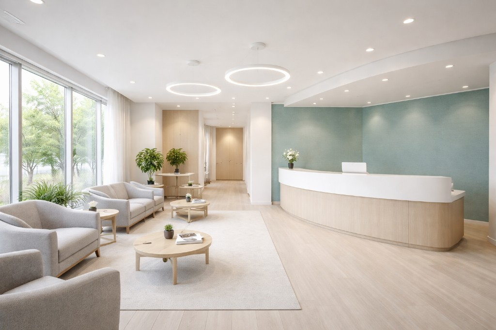

Feature 01
通いやすさへの配慮
予約優先でスムーズな案内を心がけています。お困りごとや急な痛みはお電話でご相談ください（例）。
- WEB予約 / 電話予約
- アクセスが分かりやすい立地（駅徒歩圏）
ABOUT
通いやすさと、分かりやすい説明を大切に。
不安を減らし、納得して進められる診療を目指します。
Feature 01
予約優先でスムーズな案内を心がけています。お困りごとや急な痛みはお電話でご相談ください（例）。
Feature 02
専門用語はできるだけ避け、現状や選択肢を分かりやすくご説明します。
Feature 03
器具の衛生管理や院内の清潔維持に配慮しています（例）。
※内容は医院方針に合わせて調整してください。